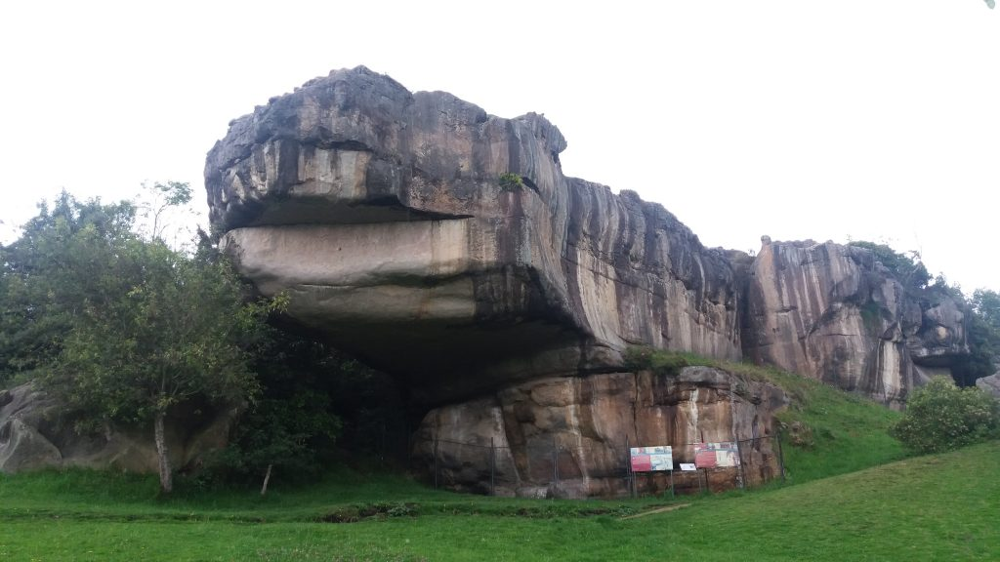
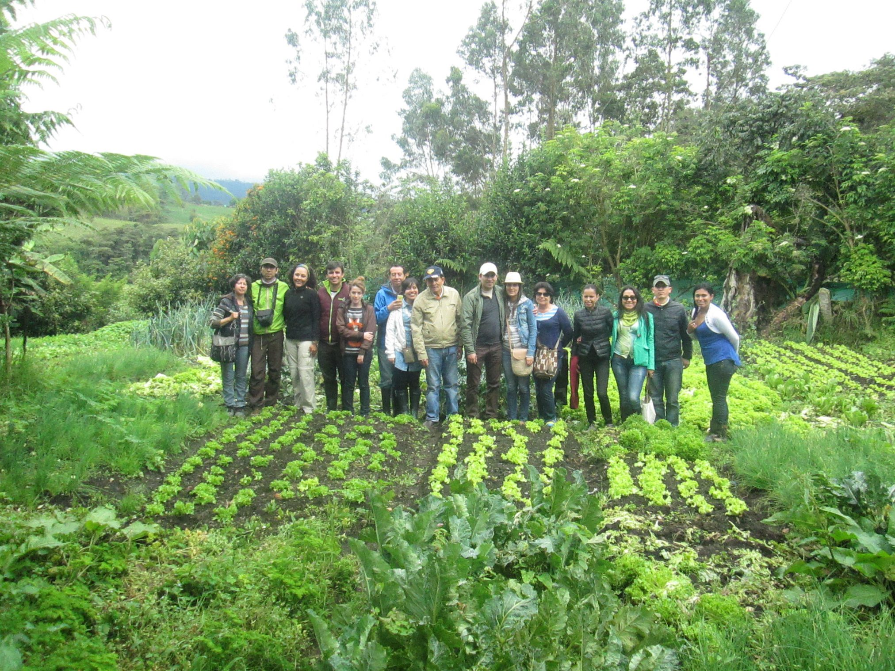
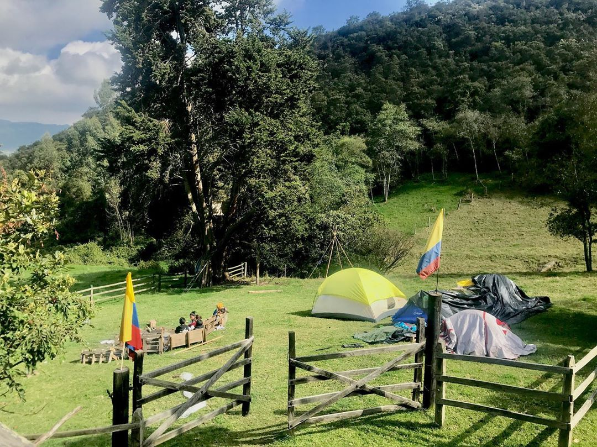

ECOTURISMO CUNDINAMARCA
¿Qué actividades se pueden desarrollar en Cundinamarca?

Si quieres conectarte con la naturaleza, pero no quieres desplazarte
en largas distancias, los ecoparques cerca de Bogotá se pueden
convertir en una excelente opción. Podrás salir de la monotonía,
hacer senderismo, deportes extremos y disfrutar de los hermosos
paisajes que ofrece Cundinamarca y sus municipios.
Parque Natural Chicaque
Este lugar se encuentra ubicado al sur occidente de la Sábana de
Bogotá. Está en el municipio de San Antonio de Tequendama, a tan solo
30 minutos de la capital. Puedes llegar en carro por la vía La Mesa o
por Soacha. Es un bosque de niebla en el que puedes hacer senderismo,
cabalgar, acampar en casas en los árboles y mucho más. Además, si lo
que quieres es pasar más tiempo allí puedes hacerte voluntario y
trabajar en las huertas, las investigaciones, el apoyo de control
contra la erosión y mucho más.

Bioparque La Reserva
Este parque es un santuario de plantas y animales rescatados del
tráfico ilegal. Cuenta con guías que te ayudarán con un recorrido por
varios ecosistemas colombianos. De acuerdo con su página web, han
rescatado y liberado a 184 animales, se han restaurado 5 hectáreas de
bosque y se han sensibilizado a 464.000 personas.

Ecoparque Chinauta
A 70 kilómetros de Bogotá, en el municipio de Fusagasugá, se encuentra
este lugar. Inicialmente, en 1999, era un restaurante y en 2004 se
incorporaron programas pedagógicos, recreativos y empresariales.
Puedes recorrer las instalaciones, hacer camping, glamping y conocer
más de los paisajes, la flora y la fauna que allí se alberga.
